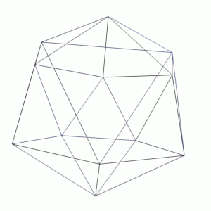
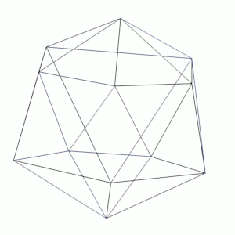

Web-design, aujourd'hui
Une présentation en HTML
2012 - Philippe M. Coatmeur
([espace] ou [droite / gauche] pour passer les slides, [echap / home / F5] pour revenir ici)
([F11] pour passer en plein écran, [.] pour noircir l'écran)

2012 - Philippe M. Coatmeur
([espace] ou [droite / gauche] pour passer les slides, [echap / home / F5] pour revenir ici)
([F11] pour passer en plein écran, [.] pour noircir l'écran)
